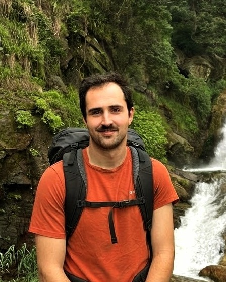
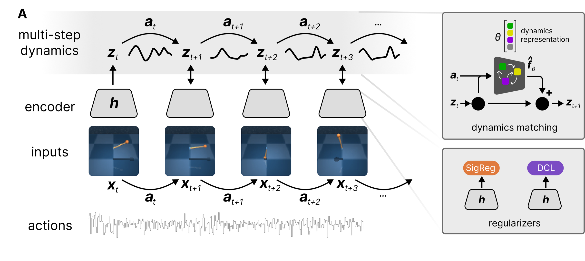
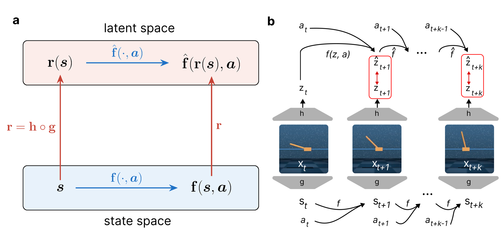
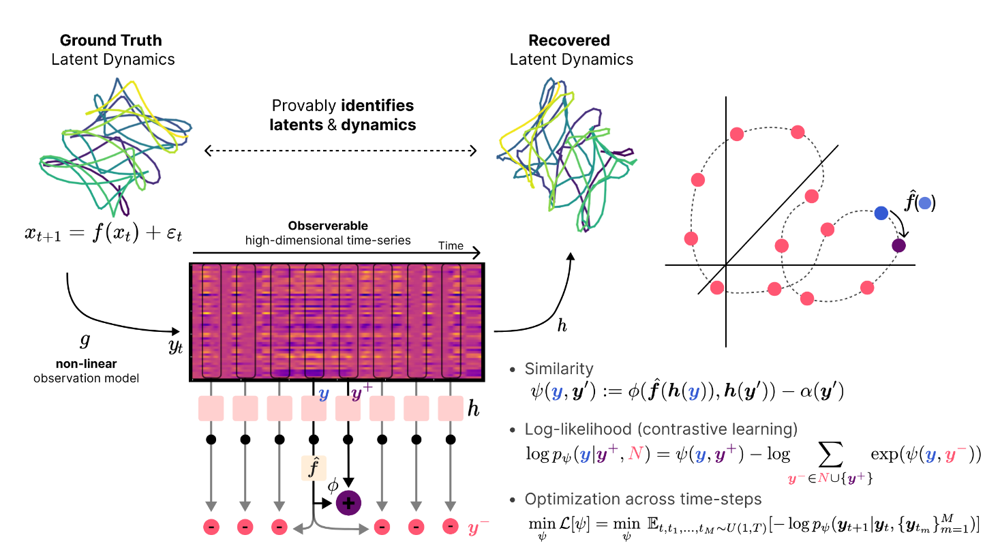
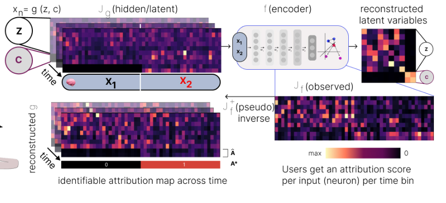

PhD student
Rodrigo Gonzalez Laiz
I build world models that recover the hidden dynamics of complex systems, with a focus on neuroscience.
About

Hi! I'm a third-year PhD student at Helmholtz Munich, advised by Steffen Schneider.
My research explores how we can learn world models that capture the underlying dynamics of complex systems, particularly in scientific domains such as neuroscience. I develop self-supervised learning methods that recover meaningful and identifiable representations & dynamics from high-dimensional, nonlinear observations.
Long term, I want to bridge representation learning, dynamical systems and scientific discovery, so we can go from complex observations to models that help us understand, predict and control real-world systems.
Research
* equal contribution
-

arXivworld2vec: Mechanistic world models through latent dynamics learning
-

arXivUnderstanding the Limits of Latent World Models
-

ICLR 2025Self-supervised contrastive learning performs non-linear system identification
-

AISTATS 2025Time-series attribution maps with regularized contrastive learning
Background
Experience
-
2024 – now
PhD student Helmholtz Munich
Identifiable representation learning, dynamical systems and world models, with applications to neuroscience.
-
2023
Research Engineer EPFL, Mackenzie W. Mathis Lab
Contributed to CEBRA, a software package for dimensionality reduction and representation learning of neuroscience data.
Education
-
2020 – 2022
MSc Statistics ETH Zurich
-
2016 – 2020
Economics, Statistics & Computer Science Universidad Carlos III de Madrid
Including an exchange year at the University of California, Davis (2018 – 2019).
Other
-
2026
Machine Learning Summer School MLSS, Tübingen
-
2025
Dynamic Brain Workshop Allen Institute, Seattle
Project-based workshop on computational and systems neuroscience.